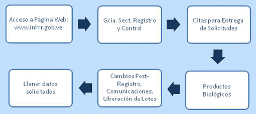

|
La liberación de lotes de productos biológicos es un proceso de evaluación documental realizada a cada lote de vacunas y hemoderivados comercializados en el país, a fin de autorizar su comercialización. Así mismo, debe ser sometido a liberación de lote, cualquier producto biológico que:
- Presentó desviaciones en su calidad
- Estuvo involucrado en el reporte de eventos adversos
- Sea considerado un producto de servicio
- Será empleado en estudios clínicos en el país
La liberación de lotes es obligatorio para Productos Biológicos de tipo Vacunas y Derivados Sanguíneos. La Solicitud de
Liberación de lote(s) puede realizarse antes de que llegue el lote al país, en el caso de productos importados.
De conformidad con la norma para el registro sanitario, liberación de lotes y control de los productos biológicos, aprobada en fecha 09/12/2008, Capítulo X Del control y liberación de lotes de productos biológicos, para la comercialización en el país de lotes de vacunas o hemoderivados debe contarse con el correspondiente certificado de liberación emitido por la Autoridad Nacional Reguladora Venezolana.
La solicitud de liberación de lotes de vacunas y hemoderivados destinados al sector privado de salud, debe ser realizada por el Farmacéutico Patrocinante del producto. En el caso de productos biológicos empleados por el Programa Ampliado de Inmunización, PAI, dicha solicitud es realizada por el ente correspondiente.
El Formulario F-RCPB-029 elaborado en junio de 2009, está destinado a la solicitud de liberación de lotes de productos biológicos, y el mismo podrá ser encontrado en la sección de Formularios de Servicios de esta página web.
- Llenar el formulario F-RCPB-029, Solicitud de Liberación de Lotes de Productos Biológicos, para cada lote de vacuna y hemoderivado a liberar, completando cada uno de los datos solicitados en dicho formulario.
- El formulario lleno, conjuntamente con el protocolo resumen de producción y control, certificado analítico del producto terminado y el certificado de liberación emitido por la Autoridad Nacional Reguladora del país de origen (para productos biológicos importados), deberán ser entregados en la División de Control Nacional de Productos Biológicos, a la siguiente dirección: Ciudad Universitaria UCV, Los Chaguaramos, detrás del Hospital Universitario, Edificio Instituto Nacional de Higiene "Rafael Rangel", piso 2, Caracas.
- Toda la documentación deberá ser remitida en forma impresa y digital, en un CD identificado con el nombre del producto, su número de registro sanitario y número de lote. Puede digitalizarse la información de más de un lote del mismo producto en un CD.
- Una vez que tenga los recaudos listos, solicite una cita para entrega de solicitud de liberación de lotes de productos biológicos:

- El día de la cita en el Departamento de Recepción y Coordinación de Biológicos de la División de Control Nacional de Productos Biológicos, 2º piso del Edificio Sede del INH"RR", Ciudad Universitaria, Caracas, deberá hacer entrega del formulario con su copia, los documentos solicitados, y la constancia de la solicitud de la cita donde se indica la fecha de la misma.
- El tiempo de evaluación es de siete (7) días continuos a partir de la recepción de la solicitud de liberación de lotes.
- El interesado deberá retirar el certificado de liberación correspondiente en el Departamento de Recepción y Coordinación
de Biológicos. La documentación impresa correspondiente al protocolo resumen de producción y control del lote del producto a liberar
será devuelta al solicitante.
|